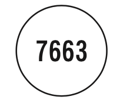
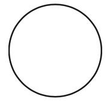
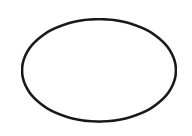

Gravitate Health FHIR Implementation Guide
0.1.0 - CI Build
Gravitate Health FHIR Implementation Guide
0.1.0 - CI Build
Gravitate Health FHIR Implementation Guide - Local Development build (v0.1.0). See the Directory of published versions
アロマターゼ阻害剤/閉経後乳癌治療剤
エキセメスタン錠
妊婦又は妊娠している可能性のある女性[9.5参照]
授乳婦[9.6参照]
本剤の成分に対し過敏症の既往歴のある患者
販売名 | アロマシン錠 25mg |
有 効 成 分 | 1錠中 エキセメスタン 25.000mg |
添 加 剤 | カルナウバロウ、デンプングリコール酸ナトリウム、クロスポビドン、軽 質無水ケイ酸、結晶セルロース、合成ワックス、酸化チタン、シリコン消 泡剤、ステアリン酸マグネシウム、精製白糖、タルク、炭酸マグネシウム、 パラオキシ安息香酸メチル、ヒプロメロース、ポリソルベート80、ポリビ ニルアルコール(部分けん化物)、ポリエチレングリコール6000NF、D-マ ンニトール |
外 形 | 識別コード | 色調等 | ||
上面 | 下面 | 側面 | ||
 |  |  | 7663 | 白色~微灰白色 糖衣錠 |
直径 | 厚さ | 重量 | ||
6.0mm | 4.0mm | 100mg | ||
本剤の重度の肝障害患者における長期安全性を指標とした臨床試験 は実施していない。9.3.1 重度の肝障害のある患者
>薬剤名等 | 臨床症状・措置方法 | 機序・危険因子 |
エストロゲン含有製剤 | 本剤の効果を減弱させる可 能性がある。 | 本剤の薬理作用はエストロゲン 合成阻害によるものであるため。 |
次の副作用があらわれることがあるので、観察を十分に行い、異常 が認められた場合には投与を中止するなど適切な処置を行うこと。
肝炎(頻度不明)、肝機能障害(頻度不明)、黄疸(頻度不明) 肝炎、AST、ALT、Al-P、 γ-GTP等の上昇を伴う肝機能障害、 黄疸があらわれることがある。11.1.1
5%以上 | 0.1~5%未満 | 頻度不明 | |
精神神経系 | 多汗、めまい | しびれ(感)、頭痛、知覚障害、 ふらつき(感)、不眠(症)、 抑うつ、不安、手根管症候群 | 傾眠 |
消化器 | 悪心 | 食欲不振、腹痛、嘔吐、腸管 閉塞、のどの通過障害感、胃 もたれ感、心窩部痛(心窩部 の疼痛)、下痢 | |
肝臓 | 肝機能異常、Al-P 上昇 | ||
皮膚 | 発疹、脱毛(症)、爪の変化 | 蕁麻疹、そう痒症 | |
筋骨格系 | 関節痛、筋骨格痛 | 骨折、骨粗鬆症、弾 発指、狭窄性腱鞘炎 | |
循環器 | 高血圧 | 動悸、低血圧 | |
呼吸器 | 鼻出血、かぜ症候群、肺炎 | ||
泌尿器 | 膀胱炎、尿検査異常 | ||
生殖器 | 不正(子宮)出血、帯下 | ||
その他 | ほてり、疲労 | 疼痛、体重減少、倦怠(感)、体臭、 浮腫、味覚異常、嗅覚障害 | 過敏症 |
IG © 2021+ . Package hl7.eu.fhir.gh#0.1.0 based on FHIR 5.0.0-snapshot1. Generated 2022-07-05